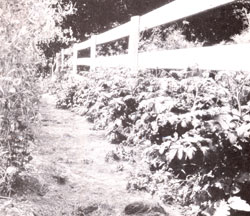
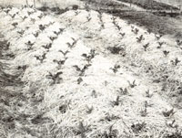

A year-round blanket of organic material makes for an almost labor-free garden.
My affair with mulch began nearly 15 years ago, when I picked up an intriguing (and now classic) gardening guide called The Ruth Stout No-Work Garden Book. Talk about love at first sight! Ever since I was a boy, I'd enjoyed gardening-but I'd hated hoeing and weeding. So when I opened the book to the first chapter and read the title, "Throw Away Your Spade and Hoe," I knew I'd found something worth trying.
For the next several years, I followed my new mentor's advice, covering the garden with a deep blanket of organic material to smother weeds, help the soil retain moisture and virtually eliminate the need to till, plow or hoe. Vegetables thrived amidst the nurturing mulch, protected from temperature extremes and fertilized by the decomposing straw or leaves.
But of course no good gardener stops searching for ways to improve. I became interested in biodynamic/French intensive (BFI) gardening, which involves growing plants in permanent raised beds that have been double-dug to a depth of two feet or more. Because of the deeply loosened, compost-enriched soil, plants can be spaced closer together, resulting in dramatically increased yields. I liked being able to raise more food in less space, but there was a lot of labor involved in double-digging. Furthermore, I found making and hauling compost-which BFI practitioners apply to their beds liberally and often-to be hard work. Finally, BFI gardeners tend to shun mulch, preferring instead the "living mulch" created by the overlapping foliage of closely spaced plants.
If I'd learned anything from experience and from Ruth Stout's books, it was to ex periment . . . to try different methods, to be open to the ideas of others, but always to temper those ideas with common sense. What works for another gardener may not suit your particular gardening conditions; sometimes it's necessary to adapt deep-mulch methods to your own situation.
"Once I've dug and formed a bed, I'll never dig or till it again."
"Gardening is like cooking: Read the recipe and then use your head," Stout wrote in her landmark book about low-labor growing, How to Have a Green Thumb Without an Aching Back. "A dash of skepticism can do no harm. Go lightly on caution, heavily on adventure, and see what comes out. If you make a mistake, what of it? That is one way to learn, and tomorrow is another day."
Applying that principle, over the years I've blended components of BFI, mulch and conventional gardening techniques into a system that works for me, and that (here in USDA Zone 5, at least) seems to allow its various elements to complement one another. The result is a hybrid: a no-till, permanent-raised-bed, deep-mulch garden system that provides several key benefits over other methods I've tried:
Raised beds provide superior drainage in wet weather, allowing a garden to be deeply mulched without keeping the soil too wet for too long. Raised beds also help you produce noticeably larger yields in less space, and (because you walk only between beds, never on them) they prevent soil compaction from foot traffic. Deep mulch virtually eliminates weeding and hoeing, fertilizes plants, prevents soil compaction (and muddy gardening conditions) due to rain, creates a fertilizing humus, improves tilth and encourages a thriving population of worms, beneficial bacteria and fungi. The combination of dense planting and deep mulch provides a double layer of mulch-both living foliage and dead organic material-that protects the soil far better than either of the two methods would alone. Because it requires so much less labor, a mulched garden makes gardening possible and fun even for small children (kids love to spread mulch) and for senior citizens and handicapped people. For the same reason, you can leave a mulched garden for two or three weeks-to go on vacation, for example-and not come back to a jungle of weeds. During the busy harvest season, you can concentrate on picking, preparing and preserving your vegetables rather than on hoeing and weeding.
You don't have to double-dig to make a raised bed; you can single-dig, plow or rototill the ground. (Keep in mind, though, that every time you till you destroy worms.) The important thing is to produce a mound of loosened soil three to five inches deep and three to four feet wide; the length and shape of the bed are entirely up to you. You also have a choice of many methods for holding the soil in the beds. Some gardeners build borders from planks staked or nailed into place, while others use landscape ties, fieldstones, bricks or cement blocks. Most of my beds are simply heaped earth with the sides sloped at a 45° angle. Mulch prevents the beds from eroding away. (This method works fine in clay or loam soils but probably wouldn't be effective in sandy soils.)
When I start beds from scratch in sod, I rototill the area several times over a two- or three-month period to kill the grasses. (Quack grass, however, is so persistent that I dig it out by hand; rototilling a single clump chops it into hundreds of pieces that become hundreds of plants.) Then I simply heap top-soil from around the bed-in other words, from the aisles-to form the bed itself. I make most paths between the beds 15 inches wide, and main aisles wheelbarrow width.
Once I've dug and formed a bed, I'll never dig or till it again, so at this point I work compost or other amendments into the area. This is an especially good idea in heavy clay or sandy soils.
You plant a raised-bed mulch garden just as you would any raised-bed garden: Place the seeds close enough so that, when the plants are mature, their leaves will overlap to form a continuous canopy. If it's a new, unmulched bed, sow the seeds as you normally would. Make a furrow (or hole, or whatever is appropriate) in the ground, plant the seeds and cover them with soil. Then sprinkle a little well-rotted mulch or compost on top of the earth to prevent soil crusting, and place mulch on either side of the planted area to limit weed growth and compaction from rain. As the plants grow, tuck mulch around them.
"This is as close to planting the way Nature does as any method."
If the garden is already mulched, it's an easy task to move the thin (one- to two-inch) layer remaining in spring and plant. For example, to plant peas I rake the mulch back to form a one-foot-wide strip of bare earth. Then I plant just as I do in unmulched beds. With finer seeds such as lettuce or carrots, I'll rake of an area about four feet square, sprinkle the seeds directly on the ground and cover them with a bit of compost or rotted mulch. This is as close to planting the way Mother Nature does as any method I know.
You can use newspapers or plastic sheeting as mulch, but they add little (in the case of newspaper, which decomposes slowly) or nothing (in the case of plastic) to the soil . . . and they leave a lot to be desired aesthetically. Newspapers do work well for mulching aisles, though. I take care not to use colored newspapers, however (harmful chemicals can leach into the soil), and I cover the papers with hay to hide them and to keep them from blowing away.
I prefer organic mulches, which not only fertilize the soil but feed my plow jockeys (worms). Hay and straw are excellent and long-lasting Grass clippings are good but decay more quickly. Be careful not to use clippings from lawns that have been treated with weed killers; traces of herbicides can be deadly to tomatoes (although, in my experience, they don't seem to harm fruit trees and some other garden plants). Bark chips make an attractive mulch. Leaves are fine, too, but only if they've been shredded or composted for a year. Freshly raked tree leaves cake together and smother the soil, retarding plant growth (raspberries, however, thrive in such material). Finely chipped tree limbs make a good, enduring mulch (but let the chips age and soften a year before you try to walk in your garden barefoot).
I've heard people say that sawdust and some other organic mulches pull the nitrogen out of the soil; as far as I can tell, this is true only at the surface and doesn't extend into the earth. I've never noticed such a problem in all my years of mulching.
There are many kinds of other materials you can use for mulch: corncobs, cocoa shells, rice hulls, etc. Availability is probably the most important consideration; the best choice is usually whatever is easiest to find and least expensive. A good bale of hay can cost $2 or more, although some farmers will give spoiled hay away. Wood chips from a nursery can be pricey, but tree trimmers will sometimes deliver chips to your garden for free. Just keep an eye out for prospects; you'll be surprised at how much material is out there.
Anytime is the right time to start mulching. Here in Illinois, I keep a comparatively thin (two-inch) layer of mulch on my garden most of the year, because in this climate a thicker mulch during cool seasons would chill heat-loving plants. Sometimes I rake the mulch off a vacant bed in order to plant, or to let the soil warm up for a few weeks before planting (though my thin mulch seldom retards soil warm-up significantly). I don't mulch my garden deeply until the weather gets hot and dry. Then I really pile it on: up to eight inches if I can. Obviously, with short plants such as lettuce this is difficult, but with potatoes, broccoli and other tall cultivars it's easy to do, and the plants love it.
I also adjust my mulching to suit the particular plant. For example, broccoli prefers cool soil, so I pile mulch on my broccoli beds early in the season. Tomatoes like it hot, so I don't mulch them heavily until summer starts to hit hard-usually June but sometimes as late as July. Of course, I also throw mulch on any spots where the layer is thinning out, or where weeds start popping up.
As the season progresses into fall and the weather cools, I no longer need to add mulch-which is convenient, since I need the time for harvesting and preserving my garden's bounty. If I notice a patch of bare soil, I'll put a little mulch on it, and if a bed seems particularly wet, I might pull a little of the material off.
By the following spring the mulch, having settled and decomposed, is no more than a couple of inches thick, but that's enough to prevent soil gusting and to discourage early weeds. There's no need to till or plow mulchconditioned soil, so I don't have to wait several weeks-as most gardeners do-for the garden to dry enough to tolerate tines or a plow blade. I plant peas, lettuce and other cool-loving crops as soon as the ground thaws in the weak sunlight of early spring.
There is no single right depth for mulch, no more than there is a single best material to use or a perfect time to use it. You can add mulch or take it away, apply a thin layer or heap it on thick. More than just a way for lazy gardeners to avoid tilling and weeding, mulch is a great moderator-you can use it to adjust soil moisture and temperature, to protect against frost and drought, to create just the right conditions for a particular type of vegetable or flower.
If you try some of my mulching techniques (or Ruth Stout's, or anyone's) and they don't quite work, don't dismiss the method altogether. Instead, see if you can find out how to change the way you use mulch to suit your own situation. For example, if mulch seems to keep your soil too moist for too long, perhaps you're applying too much too early. If you garden in sandy soil, a conventional flat row garden may be a better idea than raised beds. If insects become a problem in your mulched garden, the kind of mulch you're using could be to blame-or (even more likely) perhaps the cause is entirely unrelated to mulch. [Editor's Note: Some type of mulch are used to fight pests. A deep mulch of leaves, straw or hay discourages potato and cucumber beetles; sharp sand repels slugs.]
I think the advantages of using mulch-not the least of which are less labor, a longer season, more control over soil conditions and a garden that improves year after year-are well worth a little trial and error.
Books by Ruth Stout:
The Ruth Stout No-Work Garden Book (Rodale, $9.95).
Gardening Without Work (Cornerstone, $1.95).
How to Have a Green Thumb Without an Aching Back (Exposition, $7.50).
Other Useful Books:
No-Dig, No-Weed Gardening by Raymond Poincelot (Rodale, $10.95).
Jeff Ball's 60-Minute Garden by Jeff' Ball (Rodale, $9.95).
|
 |
 |
|